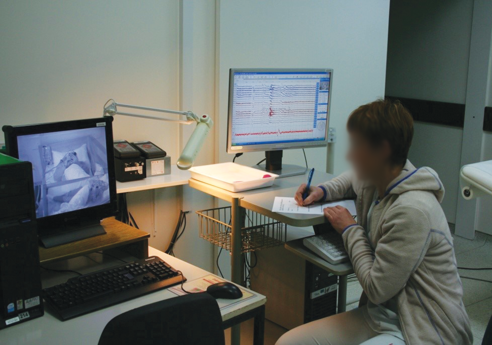
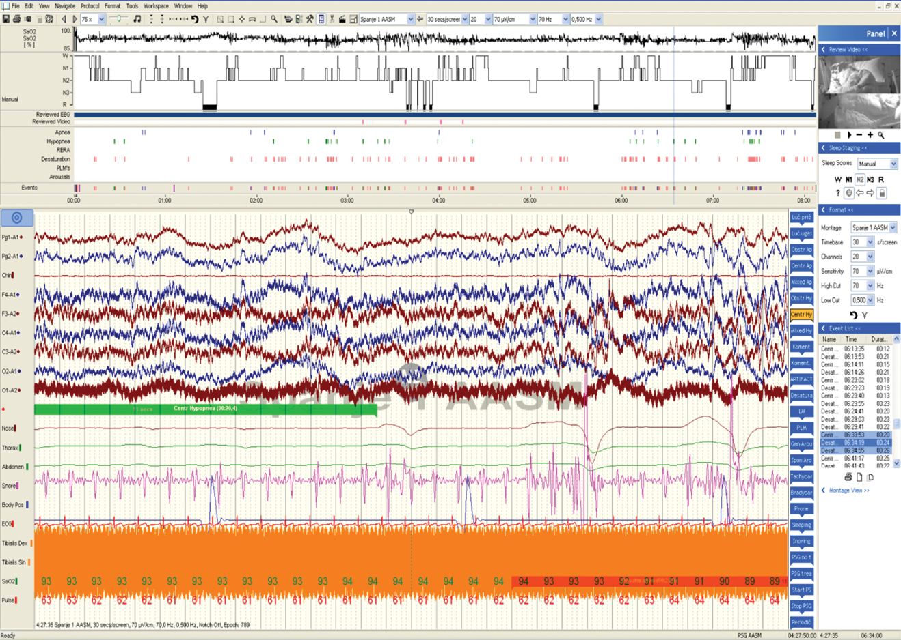
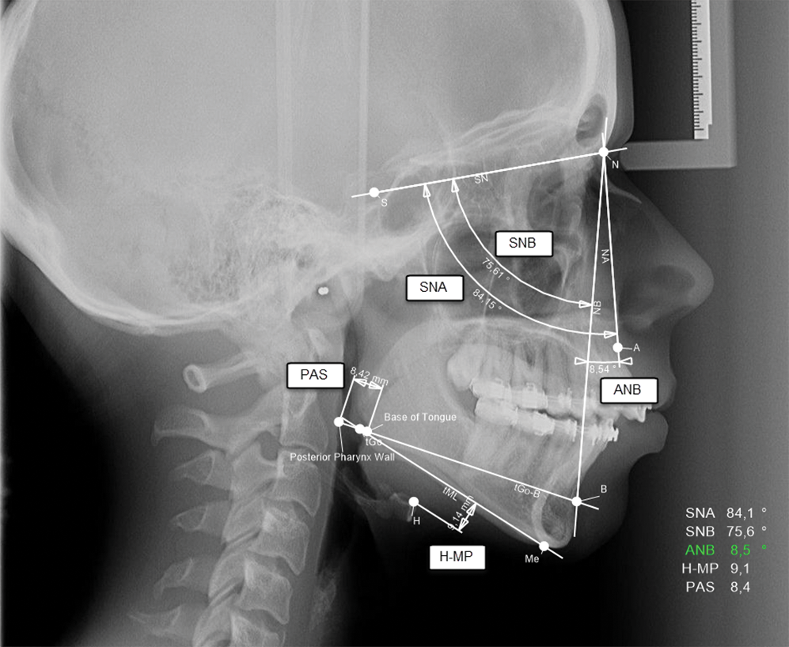
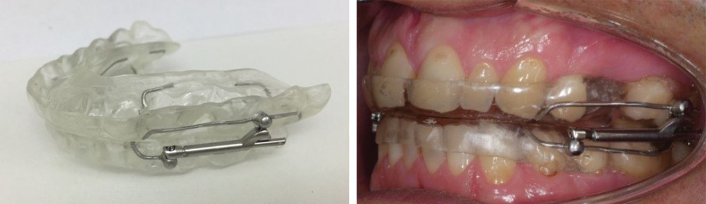
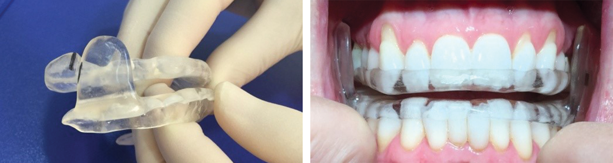
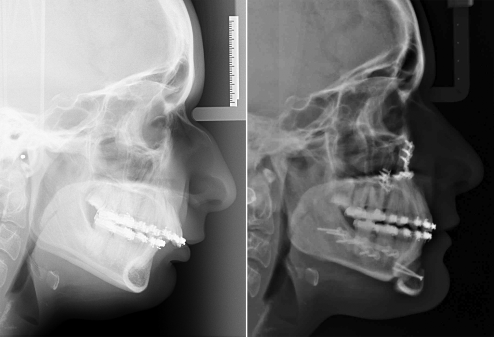

Interdisciplinarna obravnava obstruktivne apneje med spanjem: sodelovanje specialista zobne in čeljustne ortopedije ter specialista maksilofacialne kirurgije
Interdisciplinary treatment of obstructive sleep apnoea: cooperation with orthodontist and maxillofacial surgeon
Izvleček
Obstruktivna apneja med spanjem, poznana kot OSA (
Abstract
Obstructive sleep apnoea, known as OSA, is a chronic disorder of breathing characterized by frequent episodes of partial or complete obstruction of upper airway during the non-REM phase of sleep. It can be graded as mild, moderate and severe. We know numerous morphological and functional predisposing factors as well as risk factors which contribute to OSA. Among many particularities of stomatognathic system are mandibular microgenia and rethrognatia, bigger base of tongue and longer soft palate and as a consequence the narrowing of the upper respiratory tract. The gold standard for the diagnosis is polysomnography. Its primary consequences hypoxemia and recurrent arousals from sleep can show numerous and harmful effects on health, neurophysiological development and quality of life. Today OSA is also recognized as a public health problem. Treatment of OSA is multidisciplinary and very diverse. The article presents the basic facts about the disease with the emphasis on the craniofacial morphology and the role of a dentist, orthodontist and maxillofacial surgeon in its prevention, recognition and treatment.
1 Definicija, klinični znaki in epidemiologija
Obstruktivno apnejo med spanjem, danes poznano kot OSA (
Obstruktivna apneja v spanju se določi z indeksom apneja-hipopneja (AHI), to je s številom motenj dihanja na uro spanja, ki povzročijo padce zasičenosti s kisikom in s tem tkivno hipoksemijo. Za OSA po definiciji gre pri AHI > 15/h pri posameznikih brez simptomov oz. pri AHI > 5/h pri posameznikih s simptomi. OSA delimo na blago (AHI 5–14/h), zmerno (AHI 15–30/h) in hudo (AHI > 30/h) (2).
V skupino motenj dihanja v spanju štejemo poleg OSA tudi smrčanje, sindrom obstruktivne apneje v spanju (
Kadar se poleg motnje normalnega vzorca spanja pojavljajo tudi simptomi podnevi, govorimo o sindromu obstruktivne apneje v spanju – OSAS.
Simptomi OSA ponoči so glasno smrčanje, nemiren in nekakovosten spanec, pogosto odvajanje vode, občutek davljenja (4,5). Simptomi podnevi so čezmerna zaspanost, dremavost že v dopoldanskem času, utrujenost, glavobol, slabša sposobnost koncentracije in sprejemanja odločitev, avtomatsko vedenje, agresivnost, hiperaktivnost (6,7).
Prevalenca OSA je pri odraslih moških od 3 % (8) do 7 % (9), pri odraslih ženskah od 1 % (10) do 4 % (9). V pediatrični populaciji je prevalenca OSA od 1 % (11) do 4 % (12). Podatki se med razvitimi deželami ter med deželami v razvoju ne razlikujejo veliko (13). Prevalenca OSA se veča, kar raziskovalci razlagajo z naraščanjem debelosti. OSA je slabo poznana motnja spanja. Ker veliko primerov ne diagnosticirajo, je pojavnost OSA najverjetneje višja kot kažejo številke. Podatkov za prevalenco OSA v Sloveniji zaenkrat še ni.
2 Patogeneza
Danes vemo, da je za razvoj bolezni pri posamezniku lahko pomemben en ali več dejavnikov, te pa delimo na morfološke (statične) in funkcionalne (dinamične).
Najpomembnejše nepravilnosti mehkih tkiv ZDP so hipertrofija tonzil (predvsem pri otrocih), hipertrofija uvule, dolga uvula, daljše in debelejše mehko nebo, makroglosija, edem, maščobna obloženost. Žrelo je pri bolnikih z OSA ožje, še posebej v postpalatinalni regiji (14,15). Zožitev žrela je večja v lateralni kakor v sagitalni ravnini (16). Slednje je pomembno upoštevati pri vrednotenju lateralnega telerentgenskega posnetka glave in vratu.
Nepravilnosti trdih tkiv ZDP so nepravilnosti v velikosti, obliki in legi zgornje ter spodnje čeljustnice, pogosto v povezavi z okluzijskimi odkloni, deviacija nosnega pretina, dolžina ZDP, lega hioidne kosti (17).
Poznani so tudi
3 Značilnosti obraza in ustne votline pri bolnikih z OSA
Kraniofacialne nepravilnosti igrajo pomembno vlogo v patogenezi OSA. Med bolniki z OSA so določeni tipi obrazov bolj pogosti kot med normalno populacijo. Odstopanja so predvsem v sagitalni, a tudi v vertikalni ravnini, predvsem v smislu dorzokavdalne rotacije spodnje čeljustnice, pri čemer center rotacije leži v bližini temporomandibularnega sklepa (TMS) (26). Dokazali so, da je korelacija med skeletnimi nepravilnostmi in resnostjo OSA višja pri nedebelih ljudeh (27). Izsledki raziskav podpirajo tudi visoko pojavnost OSA pri bolnikih s kraniofacialnimi nepravilnostmi, kot so Pierre-Robinova sekvenca, Treacher-Collinsov in Downov sindrom (28). Mikrognatija in retrognatija spodnje čeljustnice sta pomemben morfološki dejavnik za OSA (29). Ugotovili so, da je med populacijo oseb z OSA bolj kot retrognatija spodnje čeljustnice statistično značilna mikrognatija spodnje čeljustnice (30), nekateri raziskovalci pa so ugotovili tudi retrognatijo zgornje čeljustnice (31). Pri bolnikih z OSA so opisali še številne druge anatomske značilnosti glave in vratu. Ugotovili so večjo bazo jezika, večje mehko nebo, ožji spodnji zobni lok (32). Dokazali so dve mesti zožitve ZDP: nad bazo jezika, kar je povezano z daljšim in debelejšim mehkim nebom, ter za bazo jezika, kar je povezano z retropozicijo spodnje čeljustnice ter s povečano razdaljo med čeljustnično ravnino in hioidno kostjo (33). Preostali orofarinks, t. j. področje, ki ga mehka tkiva ne zasedejo, je pri bolnikih z OSA zaradi daljšega jezika in mehkega neba manjši za 9 % (34), po nekaterih raziskavah pa celo za 50 % (15).
Pri bolnikih z OSA so izmerili daljšo kontaktno dolžino med mehkim nebom in jezikom, manjšo velikost nazofarinksa in velofarinksa v sagitalni ravini (meritve na stranskem telerentgenskem posnetku glave in vratu), manjšo razdaljo med bazo jezika in posteriorno steno žrela. Ugotovili so bolj pokončno lego jezika ter podaljšan jezik v kavdalni smeri (35). Izmerili so krajšo razdaljo med zadnjo steno žrela in spodnjimi sekalci, zaradi česar je prostor za jezik manjši (14). Pri bolnikih z OSA so ugotovili kompenzacijsko fiziološko držo s povečanjem kranio-cervikalnega kota, s čimer si bolniki povečajo prehodnost dihalnih poti v budnem stoječem stanju (15).
Najpogostejši vzrok OSA pri otrocih je hipertrofija nebnic ter žrelnice. Pri njih so ugotovili posteriorno inklinirano spodnjo čeljustnico, anteriorno inklinirano zgornjo čeljustnico, krajšo sprednjo lobanjsko bazo, zožano ZDP ter manj poudarjen nos (36). Pri otrocih z OSA so raziskovali morfologijo zobnega loka ter odnose zobnih lokov. Značilne ugotovitve so: velika sagitalna stopnica, majhen incizalni previs ali celo odprti griz anteriorno, ožji zgornji zobni lok ter krajši spodnji. Pogosto so prisotni distalni ali asimetrični odnos kočnikov ter tesno stanje v spodnjem zobnem loku (37).
Čeprav je vpliv morfologije na OSA jasen, samo z anatomskimi nepravilnostmi ne moremo prepoznati OSA pri posamezniku. Vendar pa je prepoznava zelo pomembna pri določanju najprimernejšega zdravljenja za posameznika (38).
4 Diagnosticiranje
Diagnoza OSA se postavi z meritvijo dihalnih parametrov v spanju. Metoda izbire je polisomnografija (PSG) (39,40). V Sloveniji PSG izvajajo v laboratorijih za motnje dihanja med spanjem na Kliniki Golnik, na Nevrološki kliniki UKC Ljubljana (Slika 1, Slika 2), na kliničnem oddelku za hipertenzijo v bolnišnici Petra Držaja v Ljubljani ter v UKC Maribor. Bolnik s sumom na OSA mora v laboratoriju prespati.


S PSG se meri pogostnost in trajanje prekinitev dihanja, koncentracija kisika v krvi, pretok zraka skozi dihalne poti, srčni utrip, aktiviranje medrebrnih mišic (poskus vdiha), premike očesnih zrkel (EOG), električno aktivnost v srcu (EKG), možganih (EEG), na bradi, v nogah (EMG).
Enostavnejši metodi diagnosticiranja OSA sta poligrafija, s katero se merijo isti parametri kot PSG, razen možganske aktivnosti, mišične aktivnosti in elektrokardiografije. Omogoča testiranje s prenosnimi monitorji na domu.
Med diagnostičnimi metodami se vse bolj uveljavlja endoskopija dihalnih poti med spanjem, induciranim z anestetikom (
Pri bolnikih z OSA je zelo priporočljivo analizirati telerentgenski stranski posnetek glave in vratu (33). Pomembna sta 2 parametra telerentgenske analize stranskega posnetka glave in vratu, na katera bi morali biti zdravniki, ki se ukvarjamo s kraniofacialnim področjem, še posebej pozorni. Ugotovili so, da sta razdalja med bazo jezika in zadnjo steno žrela (
5 Posledice nezdravljene OSA
Posledice nočne hipoksije in hiperkapnije so povečano tveganje za hipertenzijo, aritmijo, srčno-žilne okvare, vključno z možgansko kapjo, ishemične bolezni srca, vključno s srčnim infarktom, nevrološki zapleti, vključno s poslabšanjem epilepsije. Kronična intermitentna hipoksija je resen dejavnik tveganja za smrtnost (43).
Posredna posledica smrčanja je zmanjšana kakovost spanja partnerja, ki spi v istem prostoru.
Posledice čezmerne zaspanosti preko dneva so prometne nesreče, znižana delovna produktivnost, slabši spomin in koncentracija, težje opravljanje vsakodnevnih opravil, depresija, znižanje libida ali impotenca, naraščanje telesne teže (pozitivna povratna zveza).
OSA finančno obremenjuje celotno družbo. Zdravstvene stroške zaradi nezdravljene OSA v ZDA ocenjujejo letno na 3,4 milijarde ameriških dolarjev, celo brez upoštevanja posrednih stroškov zaradi absentizma in možnosti povzročanja nesreč v prometu in na delovnem mestu (17).
6 Zdravljenje
OSA moramo zdraviti kot kronično bolezen z multidisciplinarnim pristopom, pri čemer je pomembna tudi dejavna vloga bolnika samega. Cilj zdravljenja je zmanjšati posledice bolezni, izboljšati kakovost življenja in podaljšati pričakovano življenjsko dobo. Kadar je možno, je potrebno izbrati manj invazivne metode zdravljenja (5). Dokončen načrt zdravljenja je odvisen od teže ter od simptomov bolezni pri posamezniku. Izsledki raziskav priporočajo multidisciplinarno iskanje specifičnega vzroka bolezni in zdravljenje, s katerim določimo za bolnika najbolj primerno zdravljenje. S tem zagotovimo tudi njegovo večjo varnost.
•Sprememba življenjskega sloga: normaliziranje telesne teže je nujen ukrep pri vseh osebah z OSA, ki imajo povečano telesno težo. To je nujen ukrep tudi pri otrocih (44). Poleg tega je potrebno opustiti kajenje in vnos alkohola.
•Preprečevanje smrčanja: spanje na boku, izogibanje jemanju pomirjeval vsaj 3 ure pred spanjem (5).
•Kirurška odstranitev ovir v ZDP: odstranitev nebnic, žrelnice, krajšanje mehkega neba.
•Zdravljenje s pozitivnim zračnim tlakom, znano kot CPAP (
•Uporaba individualnih ortodontskih aparatov, ki pomaknejo spodnjo čeljustnico naprej, in držalcev jezika.
•Ortognatsko kirurško zdravljenje: pomik zgornje in spodnje čeljustnice naprej (
Študija je pokazala, da kar 40 % poskusov ocenjuje uspešnost zdravljenja OSA predvsem glede na AHI in najnižjo nasičenost s kisikom (
7 Vloga zobozdravnika, specialista zobne in čeljustne ortopedije ter maksilofacialnega kirurga pri preprečevanju in zdravljenju OSA
Veliko bolnikov z OSA ostaja nediagnosticiranih. Anamnestične liste v zobozdravniških ordinacijah bi morali posodobiti z dodatnimi vprašanji: 1. Ali med spanjem smrčite? 2. Ali se vam zdi, da ponoči ne sanjate? 3. Ali ste čez dan zaspani?
Epstein in sod. so priporočili 5 vprašanj, na katera bi morali zdravniki in zobozdravniki v zvezi z OSA pri vsakem bolniku rutinsko odgovoriti: 1. Ali ima bolnik čezmerno telesno težo? 2. Ali ima bolnik retrognatizem? 3. Ali bolnik toži o zaspanosti čez dan? 4. Ali bolnik smrči? 5. Ali ima bolnik visok krvni tlak? (47) Pozitivni odgovori na ta vprašanja zahtevajo od zobozdravnika, specialista zobne in čeljustne ortopedije ter maksilofacialnega kirurga še posebej usmerjeno pozornost za diagnosticiranje skeletnih in dentalnih odstopanj, ki so povezana z OSA. Pomembna je vloga zobozdravnika, ki zlahka klinično prepozna retrognatijo in mikrognatijo spodnje čeljustnice, povečano sagitalno stopnico, distalni odnos zob ter čezmerno obrabljene grizne površine zob. Dokazali so namreč, da je OSA najpomembnejši dejavnik tveganja za nočni bruksizem (48). Maksilofacialni kirurg bi moral pri bolniku, ki mu odstranjuje ovire v ZDP, vedno posumiti na OSA.
OSA pri otrocih neugodno vpliva na rast in razvoj orofacialnega področja. Zobozdravnik, ki posumi na OSA pri otrocih, naj bolnika čim prej napoti k specialistu otorinolaringologije, v specialistično ambulanto za motnje spanja ter k specialistu zobne in čeljustne ortopedije. Dokazali so namreč, da zgodnje diagnosticiranje ter zdravljenje OSA skoraj popolnoma normalizira rast in razvoj orofacialnega področja (36). Človeški obraz se od rojstva do odrasle dobe poveča približno za 2,5-krat. Na rast obraza vplivajo genetski in funkcionalni dejavniki. Drža odprtih ust in OSA pri otrocih prispevata k razvoju sindroma dolgega obraza. Po drugi strani pa ravno morfologija dolgega obraza poveča tveganje za razvoj OSA (49). Zato je zelo pomembna vloga otroških zdravnikov in zobozdravnikov, da spodbujajo starše in otroke k odpravljanju razvade držanja odprtih ust.
Zobozdravnik, ki posumi na OSA pri odraslih, naj bolnika napoti v specialistično ambulanto za motnje spanja, k maksilofacialnemu kirurgu ter specialistu zobne in čeljustne ortopedije.
Z raziskavami so dokazali potrebo po vključitvi specialista zobne in čeljustne ortopedije tako v diagnosticiranje kakor tudi v zdravljenje OSA (14,50). Specialist zobne in čeljustne ortopedije naj poleg standardnih telerentgenskih meritev stranskega posnetka glave in vratu izmeri tudi PAS in MP-H. Telerentgenogram je v primerjavi z računalniško tomografskim (CT) slikanjem cenejši, manj pa tudi izpostavlja bolnika žarčenju. Po drugi strani pa ima CT-slikanje v primerjavi s stranskim slikanjem telerentgenograma glave in vratu velike prednosti. CT-slikanje namreč prikaže spremembe dimenzije žrela tudi v lateralni ravnini. Prav spremembe žrela v lateralni ravni pa so za OSA pomembnejše kot spremembe v sagitalni ravnini. Poleg tega se telerentgenogram opravi v pokončni drži, CT pa v ležeči, kar vpliva na velikost ZDP (51). Zaradi manjših obsevalnih odmerkov se povečuje število raziskav, pri katerih je možno diagnosticiranje OSA in zdravljenje tudi s CT s stožčastim snopom (
Ortodontsko zdravljenje OSA obsega zdravljenje z nesnemnimi in snemnimi ortodontskimi aparati (samostojno zdravljenje ali v kombinaciji s CPAP) ter zdravljenje z nesnemnimi in snemnimi ortodontskimi aparati pred in po ortognatski operaciji čeljustnic. Ortodontski aparati za zdravljenje OSA so konstruirani tako, da držijo spodnjo čeljustnico in okolišnja tkiva naprej



V skupino MAA prištevamo Herbstov aparat in njegove izpeljanke, aktivator, monoblok, tvinblok ter številne komercialne izdelke (Slika 4, Slika 5, Slika 6). Zdravljenje z MAA je na mestu pri smrčanju, blagi do zmerni OSA, pri bolnikih, pri katerih je zdravljenje s CPAP neučinkovito, ter pri tistih, ki odklonijo zdravljenje s CPAP ali ortognatski kirurški poseg. V raziskavi, s katero so primerjali različne tipe MAA, so se med preiskovanci indeksi PSG izboljšali pri nošenju vseh vrst MAA. Stopnja učinkovitosti je odvisna od resnosti OSA, materiala in načina izdelave aparata ter obsega pomika čeljustnice (v sagitalni in vertikalni ravnini) (54). MAA s pomikom spodnje čeljustnice in jezika naprej značilno poveča ZDP, poleg tega pa poveča tudi aktiviranje mišic dilatatorjev ZDP, s čimer zmanjša možnost kolapsa ZDP (55). Mnogi so dokazali, da noben aparat ni učinkovit pri vseh bolnikih. Zato mora imeti specialist zobne in čeljustne oprtopedije, ki zdravi bolnike z OSA, poglobljeno znanje o motnjah dihanja ter bogate izkušnje s široko paleto ortodontskih pripomočkov (56). Bolnik mora imeti opravljene meritve PSG pred zdravljenjem, praviloma pa tudi z aparatom v ustih že takoj po ustavitvi aparata. Le tako lahko ugotovimo terapevtski učinek aparata. Prva dva kontrolna pregleda je potrebno opraviti po pol leta, nato pa enkrat letno. Na kontrolah moramo ugotoviti učinkovanje aparata, sodelovanje bolnika, morebitne neželene učinke in po potrebi aparat prilagoditi (56). Ves čas mora biti bolnik tudi pod nadzorom ostalih specialistov za motnje spanja (47). Cilj zdravljenja z MAA je AHI < 5/uro, zasičenost s kisikom > 85 % ter izboljšanje kliničnih znakov in simptomov. Neustrezno izdelana opornica ali drugi snemni aparati lahko pomembno poslabšajo griz in funkcijo TMS. Zato mora bolnika, pri katerem je na mestu uporaba MAA, obravnavati specialist zobne in čeljustne ortopedije. Najpogostejša težava, ki jo bolniki navajajo med uporabo MAA, je povečano izločanje sline (57). Raziskovali so dentalne ter skeletne spremembe zaradi MAA. Po 6 mesecih uporabe MAA so ugotovili povečano obrazno višino ter zmanjšan incizalni previs in sagitalno stopnico. Po 24 mesecih so ugotovili povečano izrast prvih zgornjih in spodnjih stalnih kočnikov ter povečanje naklona spodnjih sekalcev. Ugotovili so tudi povečanje telerentgenskih parametrov SNA in SNB, zmanjšanje naklona zgornjih sekalcev ter skrajšanje dolžine zgornjega zobnega loka (58). Študije dokazujejo različne mehanizme, preko katerih MAA pri bolnikih z OSA učinkujejo. Adachi je s sod. dokazal pomen povečane aktivnosti genioglosne mišice zaradi pomika spodnje čeljustnice naprej (59). Nekatere študije dokazujejo pomen povečanja žrelnega prostora retropalatinalno in retroglosalno, najbolj v lateralni ravnini (60). Tan je s sod. poročal, da bolniki MAA bolje prenašajo, kakor nCPAP (61). Vendar se moramo terapevti vedno zavedati, da natančen patofiziološki mehanizem OSA še ni povsem poznan. Zatorej samo povečanje volumna ZDP in tonusa mišic nujno ne vodi v izboljšanje bolezni. Priporočajo, da moramo pri bolnikih, ki jih zdravimo z MAA, nadzorovati stanje s PSG. Ugotovili so namreč, da lahko MAA izjemoma stanje celo poslabša.
TRD je snemni pripomoček, narejen na podlagi odtisa zob in jezika. Zajame zgornji ter spodnji zobni lok, vleče jezik naprej ter dviguje mehko nebo. Najlažje nosijo TRD osebe z odnosom prvih stalnih kočnikov razreda I. Manjše število zob v ustni votlini pomeni manjšo stabilnost TRD. Vendar lahko TRD uporabljamo celo pri brezzobih. Indikacije za uporabo TRD so blaga OSA, zmerna OSA brez zaspanosti čez dan ter v primerih neuspeha ali zavrnitve zdravljenja s CPAP ali z MMA. Neprehodnost nosnih dihalnih poti je kontraindikacija za uporabo TRD. TRD je učinkovit pri kar 71 % bolnikov (62). Ker se tudi med uporabo TRD indeks AHI lahko celo poslabša, je kontrola s PSG nujno potrebna. Neželeni učinki TRD so neugodje, bolečina v jeziku, povečano slinjenje, neugodje zaradi neestetskega videza, premik sekalcev, poslabšanje stanja parodontalnega tkiva.
Med kirurškimi metodami zdravljenja je daleč najučinkovitejša metoda kirurškega pomika zgornje in spodnje čeljustnice naprej – MMA. MMA vključuje osteotomijo LeFort I zgornje čeljustnice s pomikom navzpred in razkolno osteotomijo spodnje čeljustnice prav tako s pomikom navzpred. MMA je postala metoda izbire pri bolnikih, ki ne sprejmejo CPAP. MMA je primerna tako pri bolnikih z retrognatijo obeh čeljustnic, pa tudi pri bolnikih brez dentofacialnih anomalij, ki imajo hudo ali zmerno OSA (63).

MMA poveča faringealno dihalno pot in tenzijo tkiva. Povečana tenzija tkiva zmanjša možnost kolapsa velofaringealnih in suprahioidnih mišic ter stranske stene žrela (64). S CT-posnetki so dokazali, da se po MMA poveča ZDP v sagitalni in v transverzalni ter skrajša v vertikalni ravnini (65). Opisane spremembe zmanjšajo upor pretoku zraka, kar fizikalno opisuje Poiseuillov zakon. MMA je uspešna metoda v kar 86 % (66). Nižja starost, nižji BMI in zadosten pomik čeljustnic naprej zagotavljajo večji uspeh MMA. Debeli bolniki s kopičenjem bele maščobe in nepravilno aktivnostjo adipocitov ter bolniki, pri katerih traja OSA že dlje časa, torej imajo večje tveganje za trajni nevrološki primanjkljaj v žrelu, so manj ugodni kandidati za MMA. MMA lahko delajo maksilofacialni kirurgi tudi brez predhodne ortodontske priprave, pri čemer skušajo ohraniti bolnikov griz enak, kot je bil pred operacijo. V primerih, ko se griz po MMA poslabša (predvsem pojav odprtega griza), je potrebno po operaciji griz ortodontsko urediti (67). Idealno pa je, če bolnika pred MMA ortodontsko pripravimo. Specialist zobne in čeljustne ortopedije mora pri skeletnih nepravilnostih razreda II spodnjim sekalcem zmanjšati, zgornjim pa povečati naklon v buko-oralni smeri. Na ta način specialist zobne in čeljustne ortopedije omogoči kirurgu večji pomik spodnje čeljustnice naprej.
8 Zaključek
OSA je pomembna bolezen, ki jo poleg drugih zdravnikov prepoznavajo tudi zobozdravniki, specialisti zobne in čeljustne ortopedije in maksilofacialni kirurgi. Žal mnogi bolniki z motnjami dihanja med spanjem ostajajo nediagnosticirani. Zdravniki moramo zato več pozornosti posvečati anamnezi ter kliničnemu pregledu, usmerjenima v odkrivanje OSA. Potrebno je ozaveščanje bolnikov, saj ima lahko nezdravljena OSA hude posledice za bolnika ter njegovo ožjo ter širšo okolico. Ker je OSA zelo kompleksna in kronična bolezen, je potrebno bolnika zdraviti interdisciplinarno in dolgoročno, pri čemer je pomembno tudi sodelovanje specialistov zobne in čeljustne ortopedije ter maksilofacialnih kirurgov.
Dovoljenje za objavo fotografije nam je dala medicinska sestra, zaposlena v UKC Ljubljana.